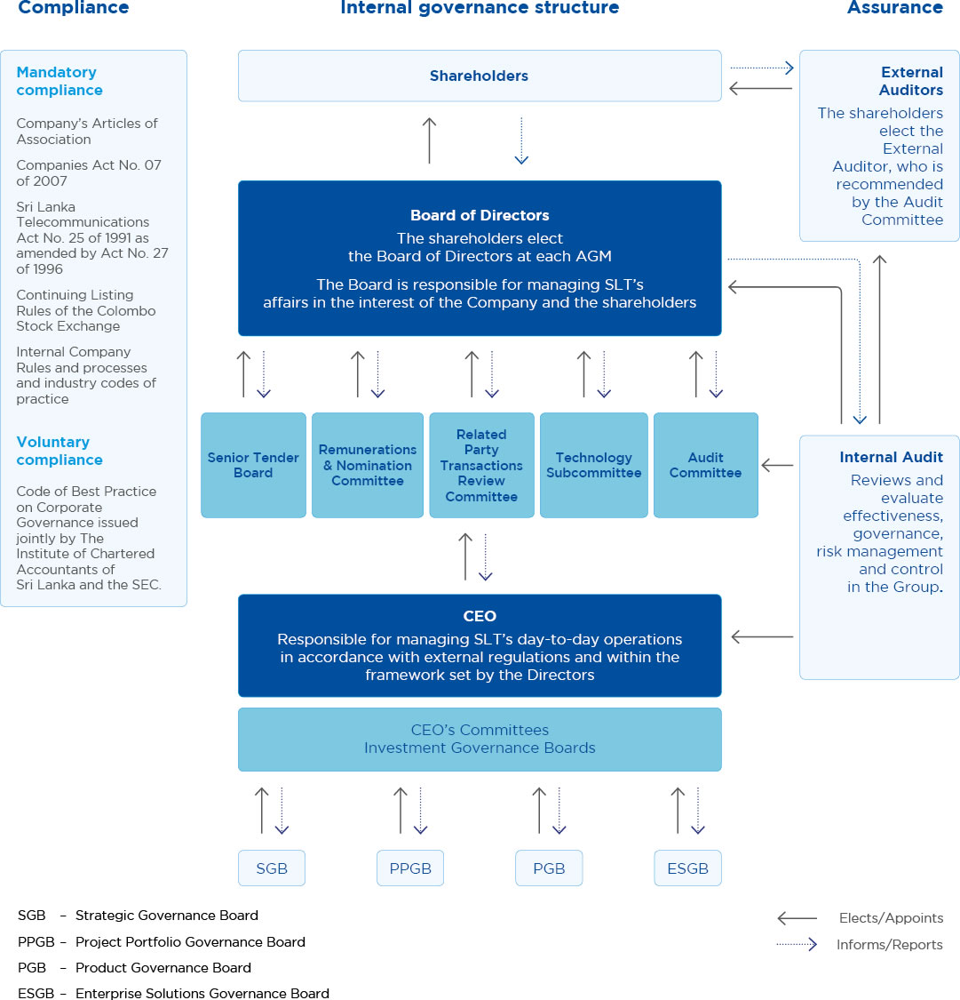

Stewardship
Corporate Governance


Corporate governance at SLT is designed to create a sound and effective corporate culture that fosters trust and creates customer and shareholder value. It is based on our employees being familiar with best practices and working together to achieve common goals.
Good corporate governance, risk management and internal control are key elements of a successful business and a prerequisite to maintain the trust of customers, owners, employees, authorities and other stakeholders. SLT defines corporate governance as the relationship between shareholders, board of directors, executive management, other employees, other Group companies and other stakeholders. In a broader sense, it also encompasses:
- How the vision, purpose and strategy are designed and communicated
- How well the values are complied with
- How goals are set and followed-up
- How risks are managed
- How future leaders are encouraged and developed
- How a corporate culture that promotes the interests of customers and builds shareholder value is created
- How transparency is promoted; and
- How we manage operations in a sustainable way
Corporate governance philosophy practiced at SLT is in full compliance with the following frameworks of legislation, codes and voluntary practices.
- Internal Company rules and processes and industry codes of practice
- Articles of Association (“AoA”) of the Company
- Legislation, particularly the Companies Act No. 07 of 2007 and the Sri Lanka Telecommunications Act No. 25 of 1991 as amended by Act No. 27 of 1996
- Listing Rules of the Colombo Stock Exchange
- Code of Best Practice on Corporate Governance issued jointly by the Institute of Chartered Accountants of Sri Lanka and the Securities and Exchange Commission of Sri Lanka (SEC).
SLT’s Corporate Governance Framework

The Board of Directors
Composition of the Board
During the year under review the Board comprised 07 Non-Executive Directors with 05 of them being Independent. The independence of the Directors has been determined in accordance with requirements set out by the CSE Listing Rules.
Their biographies demonstrate a wealth of experience and sufficient calibre to provide independent judgment on issues of strategy, performance, resources, and standards of conduct which is vital to the Group.
Ownership and Directors
As per the shareholding structure of the Company, two major shareholders, namely the Government of Sri Lanka acting through the Secretary to the Treasury, and Global Telecommunication Holdings N.V. recommends five and four directors to the Board respectively. The Board as empowered by the AoA of the Company appoints them to the Board, filling casual vacancies after deliberation of their qualifications, experience, and expertise in relevant functional areas by the R & NC. However, all Directors appointed by the Board are required by the Company's AoA to be elected by shareholders at the first AGM after their appointment. In addition, in terms of the AoA of the Company, one third of the Directors, who are longest in service retire by rotation and may seek re-election at the AGM.
The role of the Board
Providing Strategic Leadership
The Board is the highest decision-making body after the AGM. The Board is aware of internal and external issues, short-term pressure, and longer-term trends and development. The Board, while addressing certain current issues in strategic planning and contemporary issues and challenges in order to remain competitive, provides strategic directions reading the road ahead and visioning. They plan for the future while being flexible when changes are required.
The Board strives to provide strategic leadership within the business. The Board is accountable to shareholders for ensuring that SLT is appropriately managed and achieves the strategic objectives it sets. The Board carries out its responsibilities through a programme of at least eight scheduled meetings a year, which includes the approval of overall budgetary planning and business strategy.
The Board reviews internal controls and risk management policies and approves SLT’s governance structure and code of conduct. It also appraises and approves major financing, investment and licensing decisions, and evaluates and monitors the performance of SLT as a whole. This includes:
- Engaging with, supporting, and challenging the CEO and other Senior Executives on SLT’s financial and operating performance and external issues relevant to the Group's prospects
- Evaluating progress towards our financial and business objectives and annual plans
- Scrutinising the performance of management in meeting these objectives and plans
- Monitoring – through reports received directly or from various committees – the key significant risks facing SLT
The Chairman, along with the Chief Executive Officer (CEO), Chief Operating Officer (COO) and the Company Secretary, ensures that the Board functions effectively and has established Board processes designed to maximise its performance and effectiveness.
Key aspects of these processes are:
- All Directors receive accurate, relevant, timely, clear, and balanced information that reflects their duties and responsibilities. Support provided by the Company Secretary include the flow of information between Committees, the Board and Directors, and other key players involved prior to the meeting, as well as implementation of corporate governance and compliance with the requirements of the Companies Act, CSE Listing Rules and AoA of the Company.
- The CEO along with the respective Chief Officers and the Heads of Divisions presents their submissions to the Board and provides the necessary clarifications requested by the Board.
- In addition, all Board Papers are made available in electronic format, in line with the Group’s sustainability initiatives.
The attendance of individual Directors at Board meetings and Committee meetings during the year is set out in the table below.
| Board Member | Status | Board | Audit Committee | Remuneration & Nomination Committee | Technology Subcommittee | Senior Tender Board | Related Party Transactions Review Committee | |
| Mr Sirisena Kumarasinghe – Chairman | INED | 8/8 | – | 5/5 | – | – | – | |
| Mr Chan Chee Beng | NED | 8/8 | – | 5/5 | – | – | – | |
| Mr Lawrence Michael Paratz | INED | 8/8 | – | 5/5 | 9/9 | 9/9 | – | |
| Ms Lai Choon Foong | NED | 8/8 | 8/8 | – | – | 6/9 | 4/4 | |
| Ms Nilanthi Pieris | INED | 8/8 | 7/8 | – | – | 9/9 | 4/4 | |
| Mr W K H Wegapitiya | INED | 4/8 | – | – | 0/9 | 0/9 | – | |
| Mr A R Desapriya (Resigned w.e.f. 19.06.2018) | INED | 4/4 | 5/5 | 2/2 | ||||
| Mr.Kanishka Senanayake (Appointed w.e.f. 17.09.2018) | INED | 2/2 | 2/2 | – |
INED : Independent Non-Executive Director
Delegation to Board Subcommittees
SLT has in place a number of mandatory and voluntary Board Sub-Committees to fulfil regulatory requirements and for better governance of its activities. These Committees comprise Directors who can bring their expertise and experience to the assigned committees, and the duties are set out in formal Terms of Reference which is available for inspection at the Company’s registered office during normal business hours.
The Committees meet regularly to consider and discuss matters falling within their authority and accountability specified in the Terms of Reference. Their observations and recommendations are regularly reported to the Board.
Other specific responsibilities are delegated to Board committees which operate within clearly defined terms of reference. The Subcommittee Chairmen and Members meet the Corporate Executive Team members as and when required to discuss and develop proposals collectively in relation to the Group's strategy and key operational issues. Details of the responsibilities and operations of the Subcommittees are given below.
| Committee | Composition and Role | Meeting Frequency |
| Audit Committee |
The Audit Committee (AC) comprise Non-Executive Directors, majority of whom are independent. A member of the Committee is a member of recognised accounting bodies.
The members of the Committee are; Mr Kanishka Senanayake, Chairman (Appointed w.e.f. 17 September 2018) Ms Lai Choon Foong, Ms Nilanthi Pieris Mr A R Desapriya (Resigned w.e.f. 19 June 2018) |
A minimum of four meetings per annum and at such other times as the Chairman of the Committee shall require. |
|
Pursuant to the resignation from the directorate of SLT, Mr A R Desapriya ceased to become Member of the Committee effective 19 June 2018. Mr Kanishka Senanayake was appointed as a member/Chairman of the Committee effective 17 September 2018.
The CEO, the Group Chief Financial Officer, and the Group Chief Internal Auditor attend the meetings by invitation. The AC assists the Board in its oversight and monitoring of financial reporting, Group’s risks management and internal controls. The AC report sets out in more detail the Committee’s policies, practices and areas of focus. |
||
| Remuneration & Nomination Committee |
The Remuneration & Nomination Committee (R&NC) comprises Non-Executive Directors majority of whom are independent.
The members of the Committee are; Mr Chan Chee Beng – Chairman Mr Kumarasinghe Sirisena Mr Lawrence Paratz The activities of the R&NC include nomination, selection and appointment of Non-Executive Directors, GCEO and key senior officers, succession planning for the GCEO and Senior Management, and review of Board composition, particularly in relation to the diversity of background, skills, and experience. It also provides support and guidance with regard to the Group’s policy for determining the fees for non-executive directors and remuneration of CEO, CEOs of subsidiary companies, and senior management. The CEO attends meetings by invitation, as and when required by the Committee. |
Once a year and at such other times as the Chairman of the Committee shall require |
| Related Party Transactions Review Committee |
The Related Party Transactions Review Committee (RPTRC) comprises Non-Executive Directors of whom two directors are independent. The Chairman of the Committee is an Independent Director.
The members of the Committee are; Ms Nilanthi Pieris – Chairperson Ms Lai Choon Foong Mr A R Desapriya (Resigned w.e.f. 19 June 2018) Mr Kanishka Senanayake (Appointed w.e.f 17 September 2018) The objective of the sub-committee is to ensure that the interest of shareholders are taken into account when entering into related party transactions and to enhance corporate transparency and promote fair transactions between SLT, its subsidiaries and other related parties. The related party relationship with its subsidiaries is disclosed in the notes to the Financial Statements. However, the Board believes that those transactions are exempted in accordance with the exceptions specified in the Code of Best Practices on Related Party Transactions issued by the CSE. |
A minimum of four meetings per year. |
| Technology Subcommittee |
The Technology subcommittee (TSC) comprises Independent Non-Executive Directors.
The members of the Committee are; Mr Lawrence Paratz – Chairman Mr W K H Wegapitiya The TSC comprises Directors with technical expertise who are assigned the task of studying available technology and providing a platform for engaging in intense technical discussions and looking at roadmaps with a long-term perspective. CEO and Senior management members of SLT and Mobitel attend meetings of the TSC as permanent members in order to maintain Group synergies when major decisions are made. If required, CEOs of subsidiary companies are also invited to attend meetings. Therefore, TSC primarily focuses on best strategies to increase organisational efficiencies; support the advancement of professional staff capabilities, and develop a flexible delivery system to effectively respond to new technological advances and information. It is also the responsibility of the Committee to review the existence and appropriateness of plans and processes, planned and achieved Network performance and methods of assessment and the Company’s technology, people and skill plans and their implementation. |
As and when required |
| Senior Tender Board |
The Senior Tender Board (STB) comprises Non-Executive Directors.
The members of the Committee are: Ms Lai Choon Foong – Chairperson Mr Lawrence Paratz Mr W K H Wegapitiya Ms Nilanthi Pieris The CEO and the GCFO are appointed to the Committee by the Board to review the Group’s procurement needs. The procurement function involves a standard procurement process approved by the Board where, all common procurement processes are consolidated at the Group level for SLT and its subsidiaries. Therefore in order to increase efficiencies and reduce risk, the Board has delegated the approval limits for procurement as follows: Board of Directors – Value exceeding LKR 50 Mn. Senior Tender Board – Value between LKR 25 Mn. and LKR 50 Mn. Junior Tender Board – Value less than LKR 25 Mn. |
Prior to every Board meeting |
Indemnities to Directors
In accordance with the AoA of the Company, Directors are granted an indemnity from the Company to the extent permitted by law in respect to liabilities incurred as a result of the performance of their duties in their capacity as Directors to the Company. The indemnity would not provide any coverage to the extent the Director is proven to have acted fraudulently or dishonestly. The Company has maintained Directors’ and Officers’ Liability insurance cover throughout the year.
Role of the Chairman and Chief Executive Officer
Distinction between strategic and operational matters is clearly established in terms of division of responsibility of the Chairman and the Chief Executive. The Chairman of SLT is a non-executive appointment and focusses on strategic issues and monitoring the business and executive team. He ensures Board procedures are followed and all Board members effectively participate during meetings.
The Chief Executive Officer (CEO) together with the Chief Operating Officer (COO) is responsible for day-to-day management of the business and leadership of the executive team, and execution of the Group’s strategic and operating plans. The Chairman meets the CEO and the COO regularly to discuss any issues pertaining to the Company’s performance, operational matters, and human resources aspects.
The Company Secretary
The Company Secretary is responsible to the Board and is available to individual Directors in respect of Board procedures.
The Company Secretary supports the Chairman in delivery of the agenda, in particular the planning of the annual cycle of Board and Board Committee meetings, and ensures that information is made available to Board members in a timely fashion. He also advises the Directors on Board procedures and corporate governance matters.
The Company Secretary was appointed in November 2014. He is Secretary to all the Board committees as well. The Company Secretary is an Attorney-at-Law and an Associate member of the Institute of Chartered Secretaries and Administrators, United Kingdom.
The appointment or removal of the Company Secretary is a matter for the Board as a whole.
Internal control and risk management
The Board ensures that internal controls and risk management are properly established and maintained through the Audit Committee whose responsibility is to oversee internal control and risk management. The Board was directly involved in assessing the risks associated with the business and of the Company through the Risk Management process. Continual monitoring is established and built into work processes assessing new and potential risks from a bottom-up flow.
Strategic Governance Boards (SGB)
Strategic Governance Board comprising the CEO and the Chief Officers of each functional area are given the responsibility of studying the requirements of cross functional areas and introducing solutions in a transparent manner.
The six cross functional governance boards previously introduced have reduced to four in an attempt to improve in capital investment decision, enhance supply chain management and better utilisation of Group resources.
Codes of Conduct and Practice
SLT has a code of conduct that applies to all employees and third parties who deal with the Company. The Code sets out principles to guide employees in carrying out their duties and responsibilities to the highest standards of personal and corporate integrity when dealing with SLT, its competitors, customers, suppliers and the community. The processes and standards in the Code are intended to enhance investor confidence and rapport, and to ensure that decision-making is properly carried out in the best interests of the Group. The Code covers areas such as equal opportunity employment practices, workplace health and safety, conduct in the workplace, business conduct, protection of SLT’s assets, proprietary information and intellectual property, data protection, confidentiality, conflict of interest, and non-solicitation of customers and employees. The code is posted on SLT’s internal website. Policies and standards are clearly stipulated to guide employees in carrying out their daily tasks.
Material Contracts
There are no material contracts entered into by SLT or any of its subsidiaries that involve the interests of the CEO, any Director, or the controlling shareholders, Secretary to the Treasury and the Global Telecommunications Holdings, N.V.
Remuneration
SLT’s CEO is the head of management and is, therefore, remunerated as part of Senior Management. The R & NC recommends the salary package of the CEO to commensurate with his qualifications and experience for the approval of the Board. The CEO’s performance is assessed based on key performance indicators agreed upon with him.
Remuneration of Non-Executive Directors
The R & NC reviews and proposes the Non-Executive Directors’ fees based on experience and skills of the Directors and the complexity of the Group’s business and operations, for the approval of the Board.
Fees for the Chairman and the Non-Executive Directors were revised in July 2018 in commensurate with their engagement and time spent on complex issues of the Company.
The fees for non-executive Directors other than the Chairman comprised a fee for attendance at Board and Board’s subcommittee meetings. The cost of travelling and accommodation incurred by the overseas Directors who were required to travel out of their country to attend Board and sub-committee meetings is reimbursed.
The aggregate Directors’ fees paid to non-executive Directors for the financial year ended 31 December 2018 was LKR 16 Mn.
Mr W K H Wegapitiya, who was appointed to the Board in December 2015 has declined to accept a director fee and offered his monthly director fee to a charitable organisation.
Remuneration of Senior Management
The remuneration framework and policy is designed to support implementation of the Group’s strategy and enhance shareholder value.
The following are the principles for remuneration to Senior Management:
- Select appropriate performance metrics for annual and long-term incentive plans to support business strategies and ongoing enhancement of shareholder value
- Offer competitive packages to attract and retain highly experienced and talented individuals
- Link a significant proportion of remuneration to performance, both on an annual and long-term basis
Constructive use of the Annual General Meeting
The Board seeks to use the Annual General Meeting to communicate with investors, and all shareholders are encouraged to participate. Chairpersons of subcommittees will be available at the AGM to answer any questions from shareholders.
Major transactions
The Board of Directors, as required by the Companies Act, discloses to shareholders all proposed corporate transactions detailing all facts associated with such transactions that are of material value to SLT. There were no major transactions entered into by SLT for the year 2018.
Related party transactions
The Board of Directors has applied the rules issued by the CSE on related party transactions throughout its decision-making process to avoid any conflicts of interest that may occur. The Board has recognised the importance of a Related Party Transactions Committee under the Board of Directors to enhance corporate transparency and promote fair transactions between SLT and its subsidiaries. Accordingly, a RPTRC was formed comprising three Non-Executive Independent Directors with the objective of ensuring that the interests of shareholders are taken into account when entering into RPTs.
The Company has a related party relationship with its subsidiaries as disclosed in Note 34 of the Notes to the Financial Statements. However, the Board believes those transactions are exempted in accordance with exceptions specified in the Code of Best Practices on Related Party Transactions issued by the SEC. All these are recurrent transactions and are in the ordinary course of business of the Company.
Statement of Compliance
SLT is fully compliant with the requirements stipulated in Section 7.10 on “Corporate Governance” of the Continuing Listing Requirements of the Colombo Stock Exchange issued in 2010 and subsequent amendments/guidelines thereto. See the tables below for the rules on “Corporate Governance principles” and the degree of compliance to the said rules.
In addition, the Board of Directors to the best of their knowledge and belief is satisfied that all statutory payments due to the Government, other regulatory bodies and those payments related to employees of SLT, have been made in a timely manner.
| Statement of Compliance under the Rules of CSE on Corporate Governance | |||
| CSE Rule No. | CSE Rule | Compliance Status | SLT Action |
| 7.10. a,b,c | Compliance | ||
| Compliance with Corporate Governance Rules | SLT is in compliance with the Corporate Governance Rules | ||
| 7.10.1 | Non-Executive Directors (“NED”) | ||
| (a), (b) (c) | Two members or 1/3 of the Board, whichever is higher, should be NEDs. | All Directors are Non-Executive Directors | |
| 7.10.2 | Independent Directors (“ID’) | ||
| (a) | Two or 1/3 of NEDs, whichever is higher, should be independent | As at 31st December 2018, 5 out of the 7 NEDs are Independent | |
| (b) | Each NED should submit a declaration annually of his/her independence or non-independence | All NEDs have submitted signed declaration confirming their independence/non-independence | |
| 7.10.3 | Disclosures relating to Directors | ||
| (a) (b) |
The Board shall annually determine the independence or otherwise of the NEDs
Names of the IDs should be disclosed in the Annual Report |
The Board annually determines as to the independence or non-independence of each NED based on the declaration submitted by them and the names of the independent directors are set out in the Annual Report. | |
| (c ) | A brief resume of each Director should be included in the Annual Report including the Director’s experience | Refer Board of Directors section of the Annual Report | |
| (d) | Provide a brief resume of newly appointed Directors to CSE | Detailed resumes of any Director appointed during the year are submitted to the CSE. | |
| 7.10.4 | Determination of Independence | ||
| (a-h) | Requirements for meeting the criteria to be an Independent Director |
The Independence of the Board of Directors has been determined in accordance with the requirements of the CSE Listing Rules. Accordingly, 5 NEDs are considered Independent.
Mr Chan Chee Beng, Director of Global Telecommunications Holdings N.V (“GTH”) which holds 44.98% stake and Ms Lai Choon Foong a who is an employee of a related company of GTH are considered non-independent NEDs |
|
| 7.10.5 | Remuneration Committee (RC) | ||
| Composition | |||
| (a) |
The Committee shall comprise of a minimum of two IDs or of NEDs, a majority of whom shall be independent
One NEDs shall be appointed as Chairman of the Committee by the Board of Directors |
RC comprises three NEDs out of whom two are Independent. Chairman of the Committee is a NED. | |
| (b) | Functions | ||
| The RC shall recommend the remuneration of the Chief Executive Officer (CEO) and EDs |
The Board determines the recommendation made by the RC in determining the remuneration of the CEO.
The fee for NEDs other than Chairman comprised a fee for attendance at Board meetings and Board Sub-Committee meetings. The Chairman is paid a monthly fee. |
||
| (c) | Disclosure in the Annual Report | ||
| Names of Directors comprising the RC | Refer Board Sub Committees of the Annual Report | ||
| Statement of Remuneration Policy | Refer Board Sub Committees of the Annual Report | ||
| Aggregated remuneration paid to EDs and NEDs | Refer Board Sub Committees of the Annual Report and Note 7 to the Financial Statements | ||
| 7.10.6 | Audit Committee (AC) | ||
| (a) | Composition | ||
| The Committee shall comprise a minimum of two IDs or of NEDs, a majority of whom shall be independent | As at 31 December 2018, the AC comprised 3 NEDs out of whom two NEDs are considered independent | ||
| One NED shall be appointed as the Chairman of the Committee | The Chairman of the Committee is a Independent Director. | ||
| CEO and Chief Financial Officer (CFO) should attend AC meetings | The CEO, GCFO, GCIA and the External Auditors attended the Meetings by invitation | ||
| Chairman of the AC or one member should be a member of a professional accounting body | Ms. Lai Choon Foong, a member of the AC is a member of professional accounting bodies | ||
| (b) | Functions | ||
| Overseeing of the preparation, presentation and adequacy of disclosures in the Financial Statements in accordance with Sri Lanka Accounting Standards | The AC assists the Board in fulfilling its oversight responsibilities for the integrity of the Financial Statements of the Company and the Group | ||
| Overseeing of the compliance with financial reporting requirements, information requirements of the Companies Act and other relevant financial reporting related regulations and requirements | The AC has the overall responsibility for overseeing the preparation of financial statements in accordance with the laws and regulations of the country and also recommending to the Board, on the adoption of best accounting policies | ||
| Overseeing of the processes to ensure that the internal controls and risk management are adequate to meet the requirements of the Sri Lanka Auditing Standards | The AC assesses the effectiveness of internal control and risk management | ||
| Assessment of the independence and performance of the external auditors | The AC assesses the external auditor’s performance, qualifications and independence | ||
| Make recommendations to the Board pertaining to appointment, re-appointment and removal of external auditors, and approve the remuneration and terms of engagement of the external auditor | The Committee is responsible for appointment, reappointment and removal of External Auditors and also the approval of the remuneration and terms of engagement | ||
| (c) | Disclosure in the Annual Report | ||
| Names of Directors comprising the AC | Refer Board Sub Committees of the Annual Report | ||
| The AC shall make a determination of the independence of the Auditors and disclose the basis for such determination | Refer the Report of the AC given in the Annual Report | ||
| A report by the AC setting out the manner of compliance during the period to which the Annual Report relates. | Refer the Report of the AC in the Annual Report | ||